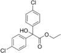

chlorobenzilate

Definition: Chlorobenzilate is a pesticide that is not currently used in the United States or Europe. It was originally developed by Ciba-Geigy and introduced in 1952. It was used as an acaricide against mites on citrus trees, including deciduous fruit trees. It has been detected as a residue on tomatoes found in Japanese markets in 2005. It is a non-systemic pesticide that works through contact and as a neurotoxin: it disrupts the functioning of the nervous system.
Source: Wikipedia
Wikipedia Page
Wikidata Page